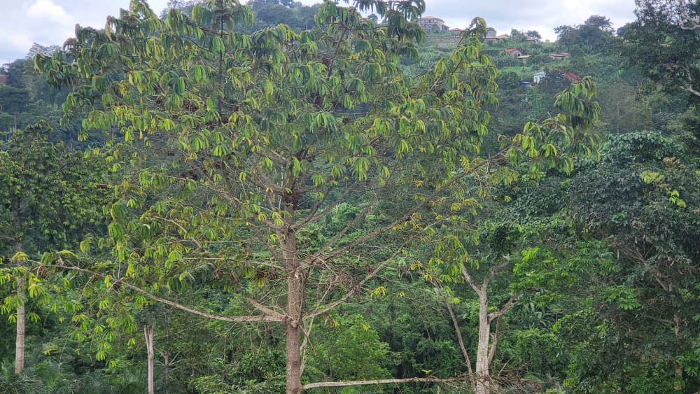

Yaoundé, Cameroun — Bassin du Congo
Yaoundé, Cameroun — Bassin du Congo info@ibce-rc.org
info@ibce-rc.org (+237) 697 874 374 / 678 202 974
(+237) 697 874 374 / 678 202 974



Cartographie des Zones Humides & Tourbières
État des Lieux 2025 — Bassin du Congo
Résumé Exécutif
La Cuvette Centrale du bassin du Congo abrite le plus grand complexe de tourbières tropicales au monde, couvrant environ 145 500 km² et stockant un total estimé à 30,6 PgC — soit l'équivalent de trois années d'émissions mondiales de CO₂ d'origine fossile. En 2025, l'IBCE-RC a conduit la cartographie la plus exhaustive jamais réalisée de ces écosystèmes, en couplant données satellitaires haute résolution, LiDAR aéroporté, levés terrain et modélisation géostatistique.
⚠ Signal d'Alerte Critique
Sans intervention immédiate, les projections IBCE-RC indiquent que les émissions liées à la dégradation des tourbières pourraient atteindre 215 MtCO₂/an d'ici 2035, transformant le bassin du Congo de puits net en source nette de carbone — un point de basculement irréversible aux conséquences planétaires. Les résultats sont alarmants : 8,3 % des zones humides montrent des signes de dégradation active, et les tourbières sous pression agricole et minière affichent des taux d'oxydation en accélération de +14 % depuis 2020.
1. Méthodologie de Cartographie
Le Programme de Cartographie Intégrée des Zones Humides (PCZH-Congo) a mobilisé une équipe pluridisciplinaire de 47 scientifiques issus de 11 institutions partenaires, couvrant les six États du bassin. La précision globale de la carte atteint 91,4 % (Kappa de Cohen = 0,887) — meilleur résultat jamais obtenu pour une cartographie des zones humides du bassin du Congo.
2. Résultats — État des Lieux 2025
Nomenclature des zones humides cartographiées
| Type d'écosystème | Surface (km²) | % total | Statut UICN |
|---|---|---|---|
| Forêts marécageuses tropicales | 485 200 | 13,1 % | VU |
| Tourbières ombrotropes | 145 500 | 3,9 % | EN |
| Prairies inondées permanentes | 380 000 | 10,3 % | NT |
| Herbiers aquatiques | 42 800 | 1,2 % | VU |
| Mangroves estuariennes | 12 400 | 0,3 % | EN |
| Zones humides de transition | 290 000 | 7,8 % | LC |
| Lacs et lagunes endoréiques | 28 600 | 0,8 % | NT |
| TOTAL cartographié | 1 384 500 | 37,4 % | — |
Évolution des surfaces 2015–2025
| Type | Surface 2015 (km²) | Surface 2025 (km²) | Variation | Tendance |
|---|---|---|---|---|
| Forêts marécageuses | 502 400 | 485 200 | −3,4 % | Déclin lent |
| Tourbières | 148 200 | 145 500 | −1,8 % | Déclin accéléré |
| Herbiers aquatiques | 52 800 | 42 800 | −18,9 % | EFFONDREMENT |
| Mangroves | 13 600 | 12 400 | −8,8 % | Déclin accéléré |
| Prairies inondées | 392 000 | 380 000 | −3,1 % | Déclin lent |
Zones de tourbières — Découvertes majeures
Cuvette Centrale Nord (République du Congo — Likouala)
- Profondeur tourbe
- 2,8 m moyenne
- Stock carbone
- 13,2 PgC
- Découverte IBCE-RC
- 4 800 km² de nouvelles tourbières
- Statut
- Zone noyau protégée
Cuvette Centrale Sud (RDC — Maï-Ndombe, Équateur)
- Stock carbone
- 14,1 PgC
- Zones dégradées
- 2 450 km² identifiées à 30 m
- Oxydation
- 12 % de la superficie (horizons 0–30 cm)
- Statut
- Zone sous pression
3. Quantification des Impacts
Émissions liées à la dégradation — 2025
| Source d'émission | Superficie | Émission CO₂ éq. (MtCO₂/an) | % émissions nationales RDC |
|---|---|---|---|
| Oxydation tourbes — Cuvette Sud | 2 450 km² | 48,2 ±6,4 | 12,8 % |
| Drainage zones marécageuses | 890 km² | 12,6 ±2,1 | 3,3 % |
| Incendies tourbières de bordure | 320 km² | 8,4 ±1,8 | 2,2 % |
| Conversion herbiers → agriculture | 620 km² | 3,8 ±0,9 | 1,0 % |
| Dégradation mangroves (CH₄) | 120 km² | 4,1 ±1,2 | 1,1 % |
| TOTAL dégradation zones humides | 4 400 km² | 77,1 ±12,4 | 20,4 % |
Impact socioéconomique
La perte nette de revenus pour les communautés de pêcheurs artisanaux est estimée à 1,94 milliard USD sur la décennie 2015–2025.
4. Recommandations Prioritaires
Actions immédiates (2025–2026) — Protection d'urgence
- Moratoire immédiat sur toute nouvelle concession minière et agricole dans les 15 700 km² prioritaires (zones rouge et orange IBCE-RC)
- Classement d'urgence en Zone de Conservation Intégrale des 145 500 km² de tourbières, avec statut légal contraignant dans les 6 États
- Inscription sur la liste RAMSAR des zones humides d'importance internationale
- Activation du mécanisme d'alerte précoce IBCE-RC pour les tourbières de la Cuvette Sud (signes d'oxydation avancée)
Actions à court terme (2026–2028) — Restauration et gouvernance
- Programme de restauration hydrologique sur 1 200 km² prioritaires (Cuvette Sud). Coût estimé : 240 millions USD — éligible au Fonds Vert pour le Climat
- Déploiement de 120 stations automatisées de mesure du niveau de la nappe phréatique dans les zones à risque
- Programme REDD+ et carbone bleu pour les zones humides, visant la certification de 450 MtCO₂/an à haute intégrité
Actions à moyen terme (2028–2030) — Pérennisation
- Création de l'Observatoire Régional des Zones Humides du Bassin du Congo (ORZH-BC), hébergé à l'IBCE-RC
- Intégration obligatoire des cartes IBCE-RC 2025 dans les Plans Nationaux d'Adaptation (PNA) de chaque État
- Mise à jour quinquennale de la cartographie avec publication d'un rapport d'impact actualisé
5. Conclusion
La campagne de cartographie IBCE-RC 2025 représente une avancée scientifique majeure. Pour la première fois, les décideurs politiques et les bailleurs disposent d'une référence cartographique exhaustive, précise et actualisée, établissant sans ambiguïté l'état écologique de ces écosystèmes vitaux.
La cartographie est achevée. Le temps de l'action est maintenant.
L'IBCE-RC s'engage à mettre ces données au service de tout partenaire qui souhaite agir. Les données IBCE-RC 2025 sont disponibles pour les partenaires institutionnels, les gouvernements et les bailleurs de fonds.
Accès aux Données & Partenariats Scientifiques
Les données cartographiques IBCE-RC 2025 sont disponibles pour les partenaires institutionnels, gouvernements et bailleurs souhaitant agir.